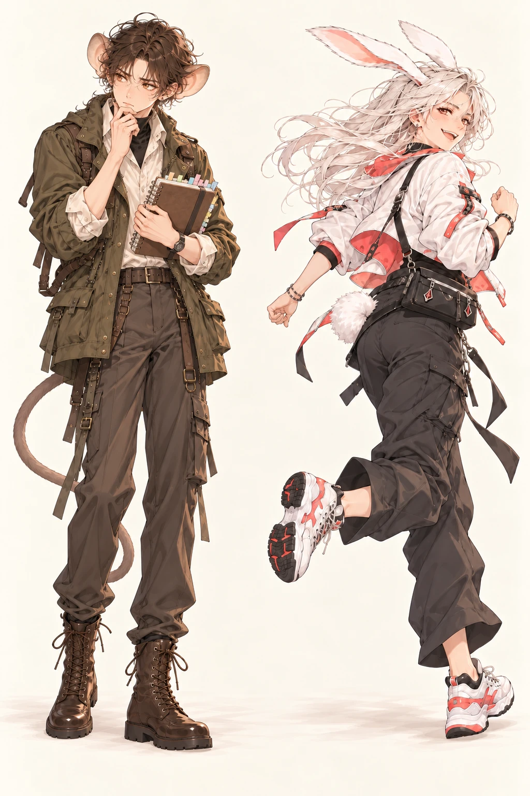

A LITTLE QUIRK. A NAME THAT'S YOU.
そのクセに、
名前をつけよう。
つい考えすぎる。思いついたら走り出す。
そんなあなたらしさを、ひとりのキャラクターに。
12の質問で、100種類の動物から
あなたに近いあだ名を見つけます。
約2〜3分 / 名前の入力なし / 回答は送信しません

考えすぎのメガネザル / 猪突猛進ウサギ
100あだ名12の質問2つの見た目
正解はありません。いつもの自分に近いほうを選んでください。
この診断は、回答と設定した傾向の近さであだ名を選ぶ娯楽向けのオリジナル作品です。性格のすべてを表すものではありません。見た目の切替で、あだ名や説明は変わりません。
100種類のキャラクターを見る
気になるあだ名から、キャラクターの見本を楽しめます。